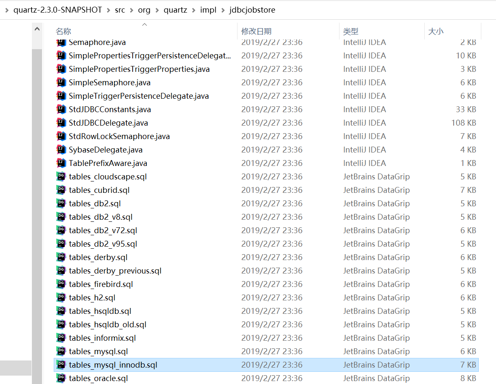

Quartz 是 OpenSymphony 开源组织在任务调度领域的一个开源项目，完全基于 Java 实现。该项目于 2009 年被 Terracotta 收购，目前是 Terracotta 旗下的一个项目。
【定时任务中间件】分布式定时任务调度Quartz
概述
Quartz支持集群和分布式，但是没有友好的管理界面，功能单一，对于管理调用的任务比较困难。
Quartz使用数据库锁。采用了悲观锁的方式对triggers表进行行加锁，以保证任务同步的正确性。Quartz的分布式只是解决了高可用的问题，并没有解决任务分片的问题，还是会有单机处理的极限。
gitHub地址：源码地址

Job与JobDetail
Job - 你想要调度器执行的任务组件需要实现的接口
一个 job 就是一个实现了 Job 接口的类，该接口只有一个方法
package org.quartz;
public interface Job {
void execute(JobExecutionContext context)
throws JobExecutionException;
}job的一个 trigger 被触发后，execute() 方法会被 scheduler 的一个工作线程调用；JobDetail 对象是在将 job 加入 scheduler 时，由客户端程序（你的程序）创建的。它包含 job 的各种属性设置，以及用于存储 job 实例状态信息的 JobDataMap。
@DisallowConcurrentExecution
Quartz定时任务默认都是并发执行的。不会等待上一次任务执行完毕，只要间隔时间到了就会执行，如果定时任务执行太长，会长时间占用资源。导致其它任务堵塞。（quartz是用一个线程池去执行的。线程池有大小。如果同一任务并发执行过多。影响线程池其它任务执行）
禁止并发执行的意思并不是不能同时执行多个Job，而是不能并发执行同一个Job Definition(由JobDetail定义)，但是可以同时执行多个不同的JobDetail。
@PersistJobDataAfterExecution注解
代表有状态的任务，改接口是一个没有方法的标签接口，其目的是让Quartz知道任务的类型，以便采用不同的执行方案。
- 无状态任务在执行时拥有自己的 JobDataMap 拷贝，对 JobDataMap 的更改不会影响下次的执行。
- 有状态任务共享同一个 JobDataMap 实例，每次任务执行对 JobDataMap 所做的更改会保存下来，后面的执行可以看到这个更改，也即每次执行任务后都会对后面的执行发生影响。
正因为这个原因，无状态的Job能并发执行，而有状态的StatefulJob不能并发执行。
JobDetail - 用于定义作业的实例
JobDetail实例是通过JobBuilder类创建的。
// define the job and tie it to our HelloJob class
JobDetail job = newJob(HelloJob.class)
.withIdentity("myJob", "group1") // name "myJob", group "group1"
.build();JobDataMap
JobDataMap中可以包含不限量的（序列化的）数据对象，在job实例执行的时候，可以使用其中的数据；JobDataMap是Java Map接口的一个实现，额外增加了一些便于存取基本类型的数据的方法。
// 设置JobDataMap
JobDetail job = newJob(DumbJob.class)
.withIdentity("myJob", "group1") // name "myJob", group "group1"
.usingJobData("jobSays", "Hello World!")
.usingJobData("myFloatValue", 3.141f)
.build();
// 放入参数，运行时的方法可以获取
jobDetail.getJobDataMap().put(ScheduleConstants.TASK_PROPERTIES, qualityInspectionRule.getId());
// 获取JobDataMap
public class HelloJob implements Job {
@Override
public void execute(JobExecutionContext context) throws JobExecutionException {
JobDataMap dataMap = context.getJobDetail().getJobDataMap();
String jobString = dataMap.getString("jobString");
Integer jobInteger = dataMap.getInt("jobInteger");
}
}触发器（SimpleTrigger && CronTirgger）
SimpleTrigger：执行N次，重复N次
CronTrigger：几秒 几分 几时 哪日 哪月 哪周 哪年，执行SimpleTrigger
SimpleTrigger可以满足的调度需求是：在具体的时间点执行一次，或者在具体的时间点执行，并且以指定的间隔重复执行若干次。比如，你有一个trigger，你可以设置它在2015年1月13日的上午11:23:54准时触发，或者在这个时间点触发，并且每隔2秒触发一次，一共重复5次。
重复次数withRepeatCount(SimpleTrigger.REPEAT_INDEFINITELY))与repeatForever()等价。
SimpleTrigger实例通过TriggerBuilder设置主要的属性，通过SimpleScheduleBuilder设置与SimpleTrigger相关的属性。要使用这些builder的静态方法，需要静态导入：
CronTirgger
相对于SimpleTrigger，CornTrigger更加的灵活和实用，它用一个Corn表达式进行任务的触发，可以适应更为复杂的场景。
Listeners
JobListener接收与jobs相关的事件
public interface JobListener {
public String getName();
// job即将执行的通知
public void jobToBeExecuted(JobExecutionContext context);
public void jobExecutionVetoed(JobExecutionContext context);
// job完成执行时的通知
public void jobWasExecuted(JobExecutionContext context,
JobExecutionException jobException);
}添加对特定job感兴趣的JobListener：
scheduler.getListenerManager().addJobListener(myJobListener，KeyMatcher.jobKeyEquals(new JobKey("myJobName"，"myJobGroup")));TriggerListeners接收到与触发器（trigger）相关的事件
public interface TriggerListener {
// Get the name of the TriggerListener
public String getName();
// 当与监听器相关联的 Trigger 被触发，Job 上的 execute() 方法将要被执行时，Scheduler 就调用这个方法
public void triggerFired(Trigger trigger, JobExecutionContext context);
// 在 Trigger 触发后，Job 将要被执行时由 Scheduler 调用这个方法。TriggerListener 给了一个选择去否决 Job 的执行。假如这个方法返回 true，这个 Job 将不会为此次 Trigger 触发而得到执行。
public boolean vetoJobExecution(Trigger trigger, JobExecutionContext context);
//Scheduler 调用这个方法是在 Trigger 错过触发时。如这个方法的 JavaDoc 所指出的，你应该关注此方法中持续时间长的逻辑：在出现许多错过触发的 Trigger 时，长逻辑会导致骨牌效应。你应当保持这上方法尽量的小
public void triggerMisfired(Trigger trigger);
// Trigger 被触发并且完成了 Job 的执行时，Scheduler 调用这个方法。这不是说这个 Trigger 将不再触发了，而仅仅是当前 Trigger 的触发(并且紧接着的 Job 执行) 结束时。这个 Trigger 也许还要在将来触发多次的。
public void triggerComplete(Trigger trigger, JobExecutionContext context,
int triggerInstructionCode);
}SchedulerListeners非常类似于TriggerListeners和JobListeners，除了它们在Scheduler本身中接收到事件的通知 - 不一定与特定触发器（trigger）或job相关的事件。
与计划程序相关的事件包括：添加job/触发器，删除job/触发器，调度程序中的严重错误，关闭调度程序的通知等。
Job Stores
JobStore负责跟踪您提供给调度程序的所有“工作数据”：jobs，triggers，日历等。
RAMJobStore
RAMJobStore是使用最简单的JobStore，它也是性能最高的（在CPU时间方面）。RAMJobStore以其明显的方式获取其名称：它将其所有数据保存在RAM中。这就是为什么它是闪电般快的，也是为什么这么简单的配置。缺点是当您的应用程序结束（或崩溃）时，所有调度信息都将丢失 - 这意味着RAMJobStore无法履行作业和triggers上的“非易失性”设置。对于某些应用程序，这是可以接受的 - 甚至是所需的行为，但对于其他应用程序，这可能是灾难性的。
配置Quartz以使用RAMJobStore
org.quartz.jobStore.class = org.quartz.simpl.RAMJobStoreJDBC JobStore
JDBCJobStore也被恰当地命名 - 它通过JDBC将其所有数据保存在数据库中。
引用
https://stackoverflow.com/questions/4408858/quartz-retry-when-failure